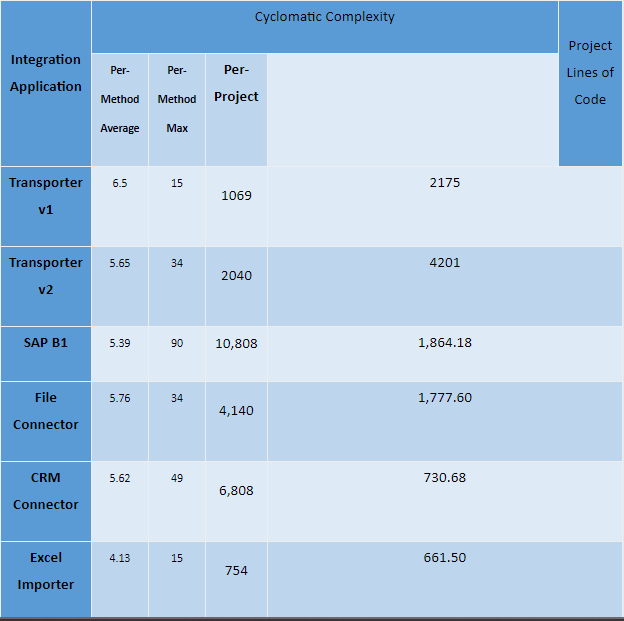
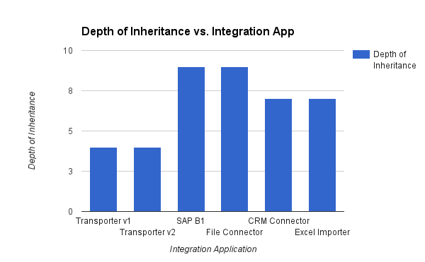
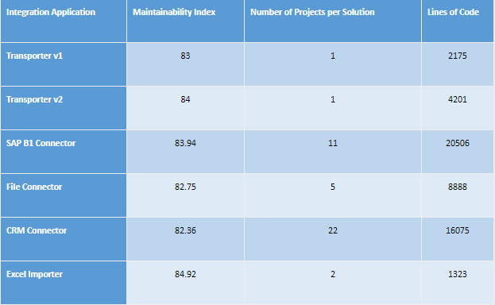
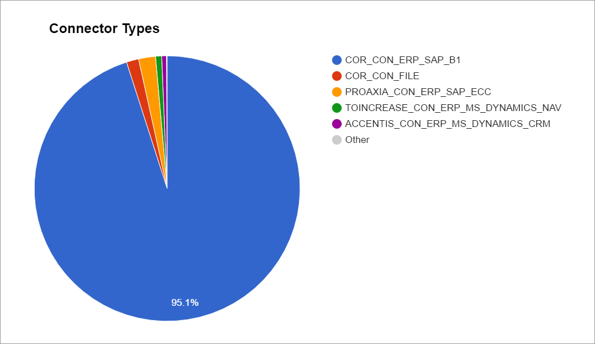
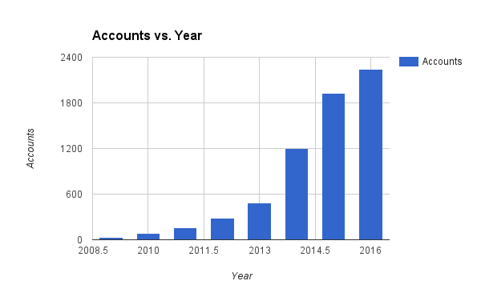

Data publicării: 29.03.2017
Autor articol: Mircea Vaida
Considerații generale
Conceptul de Planificare a Resurselor Întreprinderii (ERP – Enterprise Resource Planning) este utilizat de peste o jumătate de secol și a câștigat popularitate în segmentul de piață software în decursul anilor. Extinzându-și orizontul cerințelor și înglobând un pachet de funcții business, acest colos a migrat între o soluție proprietară și una „open source”, cu deservire locală sau în cloud, focusându-se pe clienți mici sau mari, reușind să cucerească fiecare colț al domeniului aplicativ de automatizare a procesului.
Acest raport demonstrează capabilitatea colaborării universitate (mediu academic) – companie comercială, lucru realizat in cadrul unei teze de doctorat cu finanțare mixta. S-a demonstrat astfel faptul ca cercetarea academica poate fi integrata in cadrul unei companii private cu rezultate benefice de ambele părți. Rodul lucrării este a prezenta o soluție comercială folosită pe scară largă, Coresuite.com, dezvoltată și extinsă pe parcursul ultimei jumătăți de deceniu, cu scopul de a oferi mobilitate, capabilități de management a fluxului de lucru și soluții de automatizare a procesului pentru companii care folosesc sisteme ERP.
In cadrul acestui raport se va face o trecere sintetică a principalelor obiective propuse spre realizare in cadrul tezei, a metodelor și a rezultatelor generale obținute. Focalizarea va fi pe demonstrarea capabilității obținerii de produse versionabile cu facilități îmbunătățite integrabile pe piață.
Din analiza critică a soluției primare comerciale integrate, sunt propuse îmbunătățiri majore care ar urma sa fie integrate treptat intr-un alt ciclu de utilizare al produsului.
Obiective
Inspirat de necesități comerciale din viața reală, obiectivul inițial (primar) urmărit in cadrul lucrării este de a proiecta și implementa capabilități de integrare cu cloud-ul, care să permită dezvoltarea cu efort minim a unui proiect de sincronizare de date între un sistem ERP generic și mai sus menționata soluție de cloud, pentru a accelera adoptarea comerciala.
Bazat pe limitări evidente și ascunse, atât ale rezultatelor implementărilor primare cât și ale infrastructurii moștenite, obiectivul suplimentar (secundar) este introducerea unei strategi de integrare îmbunătățite, de la o definiție perfecționată a interfeței de programare a aplicației (API – Application Programming Interface) până la un cadru de lucru de conectivitate ușor de extins și personalizat, sprijinit de performanță și capabilități de control distante și de asemenea deschis către oportunități tehnologice curente precum învățarea automatizată (machine learning) sau știința marilor volume de date (big data).
Metode
Pentru o obține obiectivele propuse, bazat pe o comparație între tipurile de soluții de conectivitate disponibile în piață care pun la dispoziție servicii de integrare generice sau dependente de un anumit produs, soluția implementată a pornit de la un proiect de conectivitate particularizat, prin generalizarea API-ului de comunicare cu cloud-ul și prin înfășurarea protocolului de integrare într-o bibliotecă reutilizabilă .NET, și a continuat prin implementarea unui proiect de conectivitate generic deasupra acestei biblioteci, care prezinta o interfață ERP deschisă, bazată pe fișiere XML.
Ambele implementări au fost expuse clienților și partenerilor, integrări terțe fiind dezvoltate în paralel cu conectorii interni, folosind aceleași API-uri și tehnologii. Acestea au fost lansate în producție, îmbunătățite și întreținute pe parcursul a aproape jumătate de deceniu.
Rezultate
Lucrarea detaliază complet cele doua aplicații implementate conforme cu obiectivul primar si secundar în vederea integrării, descrise de la o privire de ansamblu, structura componentelor, interfața utilizator și configurabilitatea, la arhitectura internă, diagramele de flux, exemple de utilizare și mecanisme de depanare, scoțând în evidență polaritatea impactului deciziilor de proiectare.
Rezultatul implementării aplicațiilor de integrare descrise a fost evaluat și cuantificat prin validarea lor productivă într-un mediu de tip cloud comercial, distribuit în întreaga lume. Incluzând alte trei aplicații de integrare dezvoltate intern, lucrarea prezintă o comparație detaliată, analizând performanța globală a aplicațiilor și metricile de cod, prezentând diferențele de funcționalitate și considerând gradul de utilizare și adoptare a soluției.
Luând în calcul opiniile clienților, complexitatea activității de mentenanță și costurile operaționale de dezvoltare, lucrarea descrie o analiză critică retroactivă, atât pentru proiectarea API-urilor cat și a aplicațiilor de integrare, conturând comparații intre ele și rezumând avantajele și neajunsurile componentelor sistemului prezent, raportate la cerințele originale ale fiecăreia.
Bazat pe această analiză, lucrarea prezintă în continuare un model strategic de integrare îmbunătățit care permite menținerea beneficiilor existente, compensând totodată pentru cele mai mari limitări, sprijinind în mod implicit noi oportunități. Modelul descrie atât necesitați de business cât și tehnice, începând cu un API de cloud centralizat, îmbunătățit, continuând cu o arhitectură detaliată la nivel de componente și terminând cu exemple practice de flux de date ale serviciilor soluției perfecționate.
Concluzii
Implementările prezentate s-au dovedit a fi un succes și în același timp contribuții practice apreciate în piața competitivă de integrare comercială a sistemelor ERP. Împreună cu aplicațiile de integrare dezvoltate intern, ele susțin creșterea și adoptarea soluției Coresuite.com, a cărei popularitate continuă să crească și în ziua de astăzi.
Observând și analizând ecosistemul de conectori Coresuite.com pe parcursul întregului lor ciclu de viată a produsului, în combinație cu validarea industrială continuă într-un mediu productiv, a servit drept o bază solidă pentru o analiză critică retroactivă a infrastructurii de integrare, o contribuție semnificativă în special pentru baza de cunoștințe Coresystems în scopul de a putea ghida strategia de integrare într-o direcție viitoare corectă.
În final, modul de integrare îmbunătățit propus, acoperind de la cerințe și arhitectură, la proiectarea componentelor și a fluxului de date a serviciilor, reprezintă atât o informație strategică importantă pentru Coresystems în luarea deciziilor, cât și o contribuție reprezentativă în piața întreprinderilor, servind ca un schelet pentru orice integrare generică de tipul „master-la-master”.
Contextul dezvoltării produsului și structura lucrării
Subiectele tratate în cadrul lucrării, de la cerințele investigate, la implementările practice și modelele de îmbunătățire propuse, sunt strâns legate de produsul software principal oferit de compania Coresystems AG, un sistem de Gestionare al Serviciilor (FSM – Field Service Management), numit Coresuite.com.
In cadrul lucrării sunt cuprinse implementările detaliate, soluția obținută fiind un sistem cloud, distribuit în întreaga lume, productiv din 2009, cu peste 2000 de clienți de tip întreprindere și peste 80000 de utilizatori. Din poziția de Inginer Software, Coordonator Tehnic și Arhitect Software, autorul a coordonat și / sau implementat majoritatea proiectelor de integrare cu cloud-ul ale soluției.
Această lucrare este structurată în șase capitole, cuprinzând fiecare următoarele aspecte, după cum urmează:
Capitolul 1 oferă o introspecție sumară în contextul tezei, subliniind conceptul de ERP și trendurile actuale, descriind preocupările curente din sfera sistemelor cloud și a serviciilor de integrare. El continuă prin introducere principalelor obiective ale tezei și prezentarea unei imagini de ansamblu a contribuțiilor. Capitolul conclude prin prezentarea în linii generale a structurii tezei.
Capitolul 2 descrie starea actuală a domeniului de cercetare, începând printr-o analiză individuală a aplicațiilor cloud și cele destinate întreprinderilor și continuă prin prezentarea strategiilor existente ce ar putea fi utilizate pentru realizarea sistemului tehnic oferit de Coresystems, incluzând cadre de lucru destinate integrării deservite în cloud, sisteme de tip Magistrală de Servicii pentru Întreprinderi (ESB – Enterprise Service Bus) cu deservire locală sau în cloud, dar și sisteme ERP deservite în cloud sau cu aplicații de mobilitate native.
Cu privire la cerințele și cazurile de utilizare ale soluției, teza prezintă o comparație între diferitele tipuri de soluții de integrare reutilizabile, atingând limitări ca: dependenta de furnizorul de sisteme ERP, necesitatea cunoștințelor suplimentare, necesitatea infrastructurii adiționale, viteza de prototipizare și suport pentru serviciile de „meta-informație”. Niciunul din tipurile de soluții investigate nu a fost capabil să satisfacă pe deplin obiectivul primar al tezei.
Capitolul 3 pășește adânc în contextul domeniului de cercetare și dezvoltare, prezentând un studiu de caz detaliat al soluției Coresuite.com. Pornind de la originea și evoluția ei istorică, capitolul se deplasează dinspre imaginea de ansamblu a componentelor sistemului și conceptele cheie, la aspecte legate de securitate, schimb de „meta-informație” sau fluxuri de sincronizare de date.
Coresuite a suferit o transformare organică dintr-o soluție pentru mobilitate într-o soluție ce pune la dispoziție competențe de automatizare a procesului sau de management al fluxului de lucru. Capabilitățile de bază ale sistemului au crescut și ele de la suportarea internă a sincronizării cu un singur tip de sistem ERP la aplicații de conectivitate interne și terțe, suportând o varietate de tipuri de tehnologii ERP, deservite atât local cat și în cloud.
Strategia esențială de integrare este construită deasupra unul API REST (Representational State Transfer – bazat pe HTTP), punând la dispoziție capabilități la nivelul contului de cloud, cum ar fi managementul utilizatorilor, subscripțiilor, permisiunilor sau bazelor de date ale companiilor, dar și suport de tip meta-informație, pentru configurare, mesagerie, securitate, comenzi sau logare.
Capitolul 4 continuă prin prezentarea celor mai relevante două implementări: biblioteca Coresuite „Transporter” și aplicația Coresuite „File Connector”. Biblioteca este detaliată într-o manieră liniară, începând de la funcționalități aferente contului de cloud, la sincronizări de date și finalizând prin funcționalități de depanare. Pentru aplicație, parcursul capitolului este dinspre imaginea de ansamblu înspre detaliu, mai precis pornind de la structura aplicației, la configurare, sincronizare de date și din nou la mecanisme de depanare.
Biblioteca Transporter este prima opțiune de integrare expusă extern, implementată ca o bibliotecă de funcții .NET care înfășoară API-ul de comunicare REST. Abstractizarea sincronizării este modelată printr-o serie de cozi la nivel de cod, fiecărui serviciu de cloud fiindu-i asociat un serviciu complet autonom al bibliotecii. Conectarea dintre bibliotecă și aplicația de integrare care o folosește este făcută prin două interfețe la nivel de cod.
Urmând ca o a doua opțiune de integrare expusă extern, aplicația File Connector este proiectată ca o implementare completă de conector, care prezintă o interfață de comunicare ERP deschisă, bazată pe fișiere XML. Nivelul de abstractizare pentru această aplicație se mută astfel de la cozi la nivel de cod, la fișiere la nivel de sistem de operare, în timp ce capabilitățile de configurare sunt expuse printr-o interfață utilizator (UI – User Interface). Persoana vizată în vederea dezvoltării proiectului de integrare poate fi atât tehnică cât și non-tehnică, aplicația fiind capabilă să se conecteze la orice sistem care produce / consumă fișiere XML, de la o unealtă de tip Extrage Transformă Încărcă (ETL – Extract Transform Load), la un cadru de lucru de tip Mapare Relațională Obiectuală (ORM – Object Relational Mapper).
Rezultatele celor două implementări au fost cuantificate folosind încă trei proiecte de integrare, analizând comparativ performanțele aplicațiilor și metricile de cod, confruntând funcționalitățile fiecăruia și evaluând gradul de utilizabilitate și adoptare de business. În timp ce rezultatele primei categorii arată îmbunătățiri majore și a doua se situează în jurul mediei clasamentului, unele valori din a treia categorie sunt mai mici decât ideale.
Capitolul 5 vine cu propunerea unei strategii de integrare îmbunătățită care să rezolve cea mai mare parte din limitările curente ale soluției, dar care să permită și dezvoltarea de noi oportunități. Aceasta începe prin iterarea motivelor de business din spatele modelului. Apoi, se prezintă o analiză critică asupra API-ului Coresuite de integrare cu cloud-ul și de asemenea asupra aplicațiilor de conectivitate existente, conturând cele mai importante avantaje și deficiențe ale fiecărei aplicații în parte. În final, capitolul prezintă o imagine de ansamblu, precum și conceptele cheie ale modelului propus, de la cerințele unui nou API de cloud, la arhitectura aplicațiilor și fluxurile de date.
Adoptarea comercială a soluției și creșterea numărului de utilizatori dovedesc că implementările reușesc sa-și atingă scopurile funcționale. Totuși, acest lucru se întâmplă uneori însoțit de costuri majore de dezvoltare, din următoarele posibile cauze: protocoalele de sincronizare neglijează atomicitatea și izolarea în favoarea consistenței și a durabilității, aplicațiile sunt greu personalizabile și inflexibile, integrarea de noi sisteme ERP nu scalează ușor, iar sistemului global îi lipsesc capabilități de monitorizare și control asupra aplicațiilor de conectivitate.
Modelul de îmbunătățire propus promovează un design modular, care decuplează straturile funcționale și responsabilitățile în componente reutilizabile „subțiri”, țintând către o scalabilitate înaltă în integrarea a noi sisteme ERP, polimorfism în tehnologia de sincronizare, un nivel înalt de izolare atât la nivel de companie cât și la nivel de interfață ERP, dar și funcționalități solide de monitorizare și control distant.
Capitolul 6 reiterează în detaliu contribuțiile autorului la aceasta teză și implicit la soluția Coresuite. El rezumă apoi concluziile trase în urma implementărilor practice, finalizând prin prezentarea perspectivelor teoretice și practice ale modelului de îmbunătățire propus.
Rezultate experimentale obținute
Pentru a prezenta o cuantizare relevantă a aplicațiilor de integrare dezvoltate, teza expune o analiză între acestea și o serie de alte aplicații dezvoltate intern, subliniind atât impactul tehnic cât și cel de business.
Performanță
Bazat pe o abordare optimistă, aplicația „File Connector” (FC) aduce îmbunătățiri la nivel de protocol, prin procesarea datelor într-un pas asincron față de transmisia lor. Alegând un obiect de business aleatoriu cu dimensiune constantă și un număr aleatoriu pentru dimensiunea lotului de obiecte transferate, aplicația FC se dovedește a fi de 9 ori mai performantă, vizibil în Tabelul 1.
Integration Application |
SAP B1 Connector |
File Connector |
SN Sync Object Count |
1,580.00 |
1,580.00 |
Sync Time [sec] |
94.74 |
10.53 |
Throughput [objects/sec] |
16.68 |
150.05 |
Throughput [objects/min] |
1,000.63 |
9,002.85 |
Table 1: Throughput Comparison between Connectors based on ERP API v1 and v2
In ceea ce privește viteza de încărcare a aplicației, timpul total este compus din timpul de inițializare și pornire al bibliotecii Transporter, al stratului de business a conectorului și al interfeței ERP. Deoarece FC-ul nu implementează o interfața de date ERP și de asemenea pentru că este implementat peste o versiune îmbunătățita de Transporter – dar chiar și dacă am exclude această diferență, timpul de încărcare este semnificativ mai mic decât cel al Conectorului SAP B1, vizibil în Tabelul 2.
Application |
SAP B1 Connector |
File Connector |
|||
Component |
Transporter v1 |
ERP Interface |
Business Layer |
Transporter v2 |
Business Layer |
Component Load Time [sec] |
3.688 |
21.509 |
12.087 |
0.655 |
5.495 |
Application Load Time [sec] |
37.284 |
6.15 |
|||
Table 2: Load Time Comparison between Connectors and their Components
Metrici de cod
În ceea ce privește „complexitatea cyclomatică”, atât FC-ul cat și Transporter-ul prezintă valori de complexitate medie per-metodă similare cu ale celorlalte aplicații, cu o valoare medie de 5.76, vizibil în Tabelul 3.

Table 3: Cyclomatic Complexity Average, Max and Total for Integration Apps
Situându-se sub pagul de 10 prezent în literatură, valoarea pare ca un indicator pozitiv pentru această metrică. Valoarea per-metodă prezentă mai sus este, pe de altă parte, relevantă doar raportat la dimensiunea totală a fiecărui proiect.
Adâncimea moștenirii (Depth of inheritance) este o metrică ce intră în conflict cu ea însăși, deoarece un număr mai mare al acestei metrici presupune scăderea predictibilității codului și creșterea complexității design-ului, dar în același timp un potențial mai ridicat de refolosire a codului. Din cele studiate, nu există un prag al acestei metrici acceptat în literatura de specialitate ca fiind recomandat. În ceea ce privește aplicația FC, aceasta se afla în vârful graficului din Figura 1.

Dogmele de design software stipulează că metodele ar trebui să aibă un coeficient de cuplare mic și un coeficient de coeziune mare. Cuplarea claselor (class coupling), ca metrică, propune ca prag superior acceptat valoarea 9 pentru un singur membru, însă valorile per-proiect, din nou raportate la dimensiunea medie a fiecăruia, sunt o metrică mai pertinentă de comparare a acestor aplicații (Tabelul 4).
Integration Application |
Per-Project Class Coupling |
Average Lines of Code Per-Project |
|
Average |
Max |
||
Transporter v1 |
182 |
182 |
2175 |
Transporter v2 |
286 |
286 |
4201 |
SAP B1 Connector |
201.73 |
834 |
1864.18 |
File Connector |
201.2 |
292 |
1777.6 |
CRM Connector |
107.14 |
512 |
730.68 |
Excel Importer |
130 |
180 |
661.5 |
Table 4: Average Per-Project Class Coupling Metrics across Integration Applications
În final, indexul de mentenabilitate al aplicațiilor analizate comparativ prezintă valori surprinzător de similare, nu numai pentru FC și Conectorul SAP B1, dar și toate restul aplicațiilor , așa cum este vizibil în Tabelul 5.

Ușurința de utilizare
Cu toate ca aceasta nu este întotdeauna o metrică perfect cuantificabilă, FC-ul prezintă o îmbunătățire în ceea ce privește viteza de prototipizare și dezvoltare în comparație cu opțiunile existente (Tabelul 7).
Integration Approach |
Cloud ERP API |
Transporter Lib. |
File Connector |
Implementation Time |
Months |
Weeks – Months |
Days – Weeks |
Table 6: Generic ERP Integration average Estimated Times
Intre 2012 și 2016 au existat un total de zece încercări de integrare a unor sisteme ERP de către parteneri externi folosind aplicația FC, mai multe decât încercări folosind biblioteca Transporter în aceeași perioada de timp, așa cum o demonstrează Tabelul 8.
Integration Tool |
Cloud ERP API |
Transporter |
File Connector |
Attempts |
0 |
7 |
10 |
Table 7: External ERP Integration Attempts
Aplicația FC nu colectează informații despre tipul de sistem ERP, prin urmare trasabilitatea unui conector productiv la tipul de sistem ERP este inexactă. Cu toate acestea, la momentul scrierii acestei lucrări, existau optsprezece conturi care folosesc aplicația FC, valoare ce se situează sub numărul de conturi ce sincronizează date folosind biblioteca Transporter (Tabelul 9).
Integration Option |
Cloud ERP API |
Transporter Lib. |
Transporter v1 |
SAP ECC |
25 |
Transporter v2 |
MS Dynamics CRM |
10 |
File Connector |
N/A |
18 |
Table 8: Productive External Connector Distribution
Daca efectuăm o numărare a tuturor conectorilor, agregată peste toate serverele (clusters) productive de cloud Coresuite, vedem ca distribuția înclină covârșitor înspre Conectorul SAP B1, aplicației FC corespunzându-i numai 1.5% din toate conturile active, așa cum este prezentat în Figura 2.
Adoptare Business

Cu toate acestea, între 2009 și 2016, numărul de conturi (și implicit utilizatori) a crescut continuu, cu o viteza aproape exponențială, așa cum arată Figura 3.

Privire de ansamblu asupra contribuțiilor generale obținute
Contribuțiile autorului la soluția prezentată sunt atât practice, cât și teoretice, putând fi rezumate in decizii de proiectare ale API-urilor de cloud pentru conectivitatea sistemelor ERP, coordonarea și / sau implementarea celor mai multe aplicații de conectivitate ale soluției Coresuite, dar și analiza critică a soluției existente și formularea cerințelor arhitecturale de proiectare ale modelului de îmbunătățire propus, care să compenseze pentru limitările curente și să deschidă noi oportunități tehnice și de business.
Aplicate
Pe partea practică a contribuțiilor, cu relevanță atât pentru valoarea tezei cât și pentru dezvoltarea soluției Coresuite, următoarele contribuții pot fi enumerate, detaliat parțial sau integral pe parcursul tezei:
- Proiectarea îmbunătățirilor tehnice și extinderea funcțională a API-urilor de sincronizare ERP ale soluției: Coresuite ERP API versiunea 1 și versiunea 2, detaliat în capitolul 4.2 și publicat în [Popa, 2014c].
- Proiectarea îmbunătățirilor tehnice și implementarea de module din Coresuite Transporter v1 și v2, bibliotecile de comunicare ce abstractizează ERP API v1 și respectiv v2, cu aspecte prezentate în capitolul 4 și publicate în [PV, 2016d] și [Popa, 2014c].
- Proiectarea, implementarea, îmbunătățirea și rescrierea unor parți semnificative din aplicația Coresuite SAP Business One Connector, primul și cel mai important conector al soluție dezvoltat de Coresystems. Aspecte relevante despre acesta sunt prezentate în capitolele 3.2, 5.3 și 5.4 și publicate în [Popa, 2015].
- Proiectarea, implementarea și îmbunătățirea aplicației Coresuite File Connector – un conector cu interfață ERP bazată pe fișiere XML, dezvoltată pentru integrarea cu alte aplicații cu nivel de abstractizare ridicat, care nu necesită abilități de programare software și menită pentru dezvoltări terțe. Această aplicație este detaliată complet în capitolul 4.1 și publicată în [PV, 2016b], [PV, 2016c], [PV, 2016f] și [Popa, 2015].
- Aspecte de mentenanță ale aplicației Coresuite Microsoft CRM Connector, conector dezvoltat intern. Caracteristicile cele mai relevante sunt conturate pe parcursul capitolelor 3.1, 3.2, 5.4 și 5.5 și publicate în [Popa, 2015].
- Proiectarea și implementarea îmbunătățirilor pentru aplicația Coresuite Excel Importer, o unealtă software inițial internă (și mai apoi productivă) menită pentru importarea în cloud a datelor provenite din sisteme ERP nesuportate de soluție. Aplicația este prezentată ca parte din evoluția istorică a soluție în capitolul 3.1.3 și publicată în [Popa, 2014c].
Teoretice
Contribuțiile teoretice ale tezei, împreuna cu capitolele și publicațiile care le cuprind, sunt enumerate după cum urmează:
- Analiza critică a API-urilor de conectivitate ERP ale soluție Coresuite și implicit a bibliotecilor Transporter care le înfășoară, împreuna cu punctele forte și limitările generate de deciziile istorice de proiectare, descrise în detaliu în capitolul 5.3 și publicate în [PV, 2016e].
- Analiză critică a aplicațiilor de conectivitate Coresuite, atât interne cât și terțe, aferente cerințelor lor originare și asociate constrângerilor induse de sistemul ERP al fiecăreia, incluzând metrici de performanță și mentenanță a codului, comparații de funcționalitate, metrici de utilizabilitate și adoptare de business, descrise în capitolele 4.3 și 5.4 și publicate în [PV, 2016c] și [PV, 2016e].
- Detalierea unui model arhitectural de îmbunătățire, menit să depășească neajunsurile și limitările designului API-urilor și a implementărilor existente, de la structura componentelor la fluxuri de lucru si servicii. Capitolul 5.5 si publicația [PV, 2016e] descriu în detaliu aceste aspecte.
Rezultatele cercetării
Rezultatele cercetării s-au concretizat in teza de doctorat finalizată care este disponibilă in cadrul bibliografiei, lucrări de diseminare (reviste/conferințe), proiecte de cercetare și rapoarte tehnice realizate.
Teza de doctorat
1. Sorin Popa, “ERP to Cloud Integration Connecting the Giants”, teza doctorat UTC-N., prezentată, in 29 septembrie 2016, avizată de ministerul educației in decembrie 2016, conducător teză UTC-N prof. Dr. Ing. Mircea-F. Vaida.
Articole de revistă
- [PV, 2016e] Sorin Popa, Mircea-Florin Vaida, “A Practical Strategy for ERP to Cloud Integration”, Studies in Information and Control (SIC) –vol. 25(3), pp. 375-384, ISSN 1220-1766, 2016, ISI Journal, http://sic.ici.ro/?page_id=11615
- [PV, 2015] Sorin Popa, Mircea-Florin Vaida, “Enterprise Bus as Service – An Ideal Cloud Connectivity Model”, Acta Technica Napocensis – Electronics and Telecommunications, Volum 56, Număr 1, pp. 29-34, Martie 2015, indexat CNCSIS B+, ISSN 1221-6542
- [PV, 2016f] Sorin Popa, Mircea-Florin Vaida, “OUTSPREADING ENTERPRISE CAPABILITIES INTO THE CLOUD – A COMMERCIAL CASE STUDY”, Acta Technica Napocensis – Electronics and Telecommunications, Volum 57, Număr 3, pp. 23-28 , Septembrie 2016, indexat CNCSIS B+, ISSN 1221-6542
Articole de conferință
- [PV, 2016c] Sorin Popa, Mircea-Florin Vaida, “A Practical Abstraction of ERP to Cloud Integration Complexity: The Easy Way”, RoEduNet International Conference – Networking in Education and Research (RoEduNet NER), Ediția a 15-a, pp. 22-26, București, Septembrie 2016, IEEE eXplore, ISI CPCI, ISSN 2068-1038
- [PSV, 2016] Sorin Popa, Cosmin Strilețchi, Mircea-Florin Vaida, “Implications of a Consistency-Oriented Sync API in an ERP to Cloud Integration Library – A Case Study”, International Symposium on Electronics and Telecommunications (ISETC), Timișoara, 27-29 oct. 2016, IEEE Catalog number CFP1603L-PRT, ISBN 978-4-5090-5748-3, pp. 43-46, ISI CPCI
- [PV, 2016a] Sorin Popa, Mircea-Florin Vaida, “Embracing the Cloud for ERP Mobility”, International Conference on Automation, Quality and Testing, Robotics (AQTR), Ediția a 20-a, pp. 1-6, Mai 2016, ISBN 978-606-737-160-4
- [PV, 2016b] Sorin Popa, Mircea-Florin Vaida, “A Practical Solution for Extending The ERP into The Cloud. Case Study”, 1st Special Award at Student Symposium on Electronics and Telecommunications (SSET), Novice Insights in Electronics, Communications and Information Technology, pp. 1-8, Numar 17, 2016
- [SVCP, 2016] Cosmin Strilețchi, Mircea-Florin Vaida, Ligia Chiorean, Sorin Popa, “A cross-platform solution for software plagiarism detection”, International Symposium on Electronics and Telecommunications (ISETC), Timișoara, 27-29 oct. 2016, IEEE Catalog number CFP1603L-PRT, ISBN 978-4-5090-5748-3, pp. 141-144, ISI CPCI
Concluzii generale
Această teză a fost scrisă ca si o colaborare între un program doctoral din cadrul Departamentului de Comunicații al Universității Tehnice din Cluj-Napoca și Coresystems AG, o companie Elvețiană de dezvoltare software, unde autorul a fost angajat cu normă întreagă în timpul programului de studii.
Am putut astfel demonstra faptul ca in ciuda unor bariere aparente de abordare intre mediul academic si cel industrial/comercial soluția adoptată a dat rezultate benefice de ambele părți.
Abordări de colaborare academice – academice au mai existat și sunt in general mai ușor de realizat însă in contextul actual majoritatea activităților de cercetare din cadrul universităților ar trebui sa includă și parteneri comerciali capabili a susține și integra rezultatele obținute.